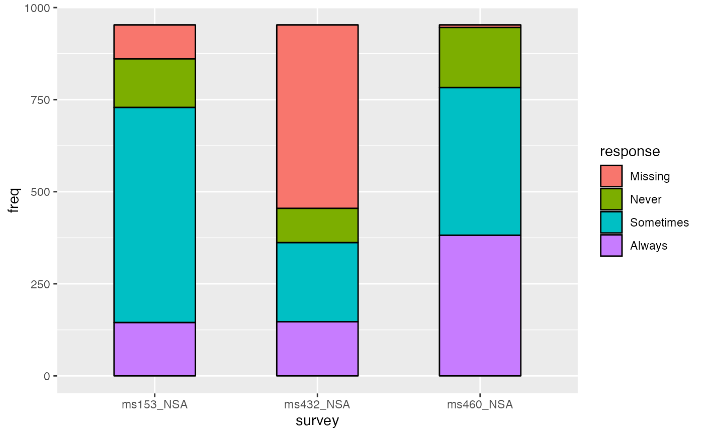
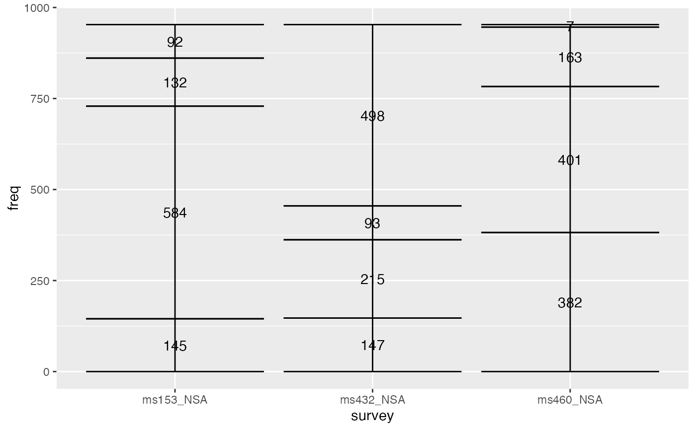
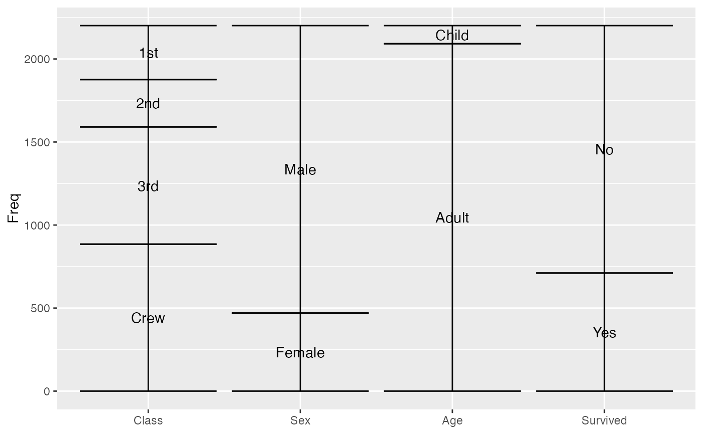
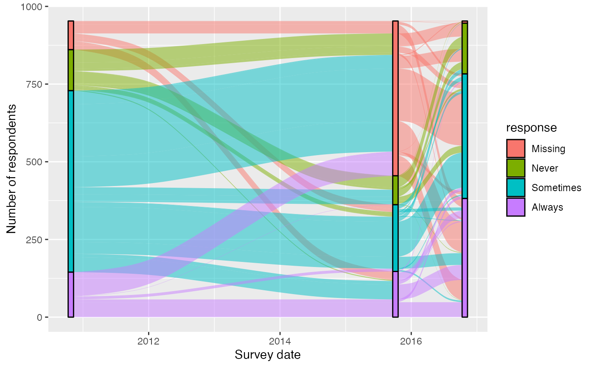

Stratum positions
Given a dataset with alluvial structure, stat_stratum calculates the
centroids of the strata at each axis, together with their weights (heights).
stat_stratum(mapping = NULL, data = NULL, geom = "stratum", position = "identity", decreasing = NA, reverse = TRUE, discern = FALSE, label.strata = FALSE, show.legend = NA, inherit.aes = TRUE, na.rm = FALSE, ...)
Arguments
| mapping | Set of aesthetic mappings created by |
|---|---|
| data | The data to be displayed in this layer. There are three options: If A A |
| geom | The geometric object to use display the data; override the default. |
| position | Position adjustment, either as a string, or the result of a call to a position adjustment function. |
| decreasing | Logical; whether to arrange the strata at each axis
in the order of the variable values ( |
| reverse | Logical; if |
| discern | Passed to |
| label.strata | Logical; whether to assign the values of the axis
variables to the strata. Defaults to FALSE, and requires that no
|
| show.legend | logical. Should this layer be included in the legends?
|
| inherit.aes | If |
| na.rm | Logical:
if |
| ... | Additional arguments passed to |
Aesthetics
stat_alluvium, stat_flow, and stat_stratum require one
of two sets of aesthetics:
xand at least one ofalluviumandstratumany number of
axis[0-9]*(axis1,axis2, etc.)
Use x, alluvium, and/or stratum for data in lodes format
and axis[0-9]* for data in alluvia format
(see is_alluvial).
Arguments to parameters inconsistent with the format will be ignored.
Additionally, each stat_* layer accepts the following optional
aesthetics:
weightgroup
weight controls the vertical dimensions of the alluvia
and are aggregated across equivalent observations.
group is used internally; arguments are ignored.
Finally, stat_stratum accepts the following optional aesthetic:
label
label is used to label the strata and must take a unique value across
the observations within each stratum.
These and any other aesthetics are aggregated as follows:
Numeric aesthetics, including weight, are summed.
Character and factor aesthetics, including label,
are assigned to strata provided they take unique values across the
observations within each stratum (otherwise NA is assigned).
See also
layer for additional arguments and
geom_stratum for the corresponding geom.
Other alluvial stat layers: stat_alluvium,
stat_flow
Examples
# only 'stratum' assignment is necessary to generate strata data(vaccinations) ggplot(vaccinations, aes(weight = freq, x = survey, stratum = response, fill = response)) + stat_stratum(width = .5)#> Warning: Data is already in lodes format, so 'discern' will be ignored.# lode data: positioning with weight labels ggplot(vaccinations, aes(weight = freq, x = survey, stratum = response, alluvium = subject, label = freq)) + stat_stratum(geom = "errorbar") + geom_text(stat = "stratum")#> Warning: Data is already in lodes format, so 'discern' will be ignored.# lode data: positioning with stratum labels ggplot(vaccinations, aes(weight = freq, x = survey, stratum = response, alluvium = subject, label = response)) + stat_stratum(geom = "errorbar") + geom_text(stat = "stratum")#> Warning: Data is already in lodes format, so 'discern' will be ignored.# alluvium data: positioning with weight labels ggplot(as.data.frame(Titanic), aes(weight = Freq, axis1 = Class, axis2 = Sex, axis3 = Age, axis4 = Survived, label = Freq)) + geom_text(stat = "stratum") + stat_stratum(geom = "errorbar") + scale_x_continuous(breaks = 1:4, labels = c("Class", "Sex", "Age", "Survived"))# alluvium data: positioning with stratum labels ggplot(as.data.frame(Titanic), aes(weight = Freq, axis1 = Class, axis2 = Sex, axis3 = Age, axis4 = Survived)) + geom_text(stat = "stratum", label.strata = TRUE) + stat_stratum(geom = "errorbar") + scale_x_continuous(breaks = 1:4, labels = c("Class", "Sex", "Age", "Survived"))